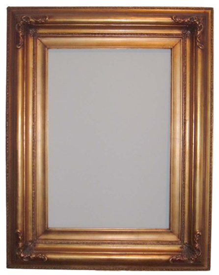
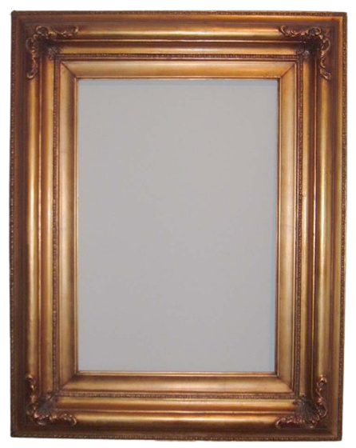

Unfortunately, Marko did not enroll in college for several reasons. The first is that he doesn't like to study, the second is that he wouldn't like to go abroad and struggle with all the problems, and of course one of the main reasons is that Marko liked money, so he started to work in our store. With our parents. His parents tried to convince him to enroll in the University and study anything to get a degree, even if he didn't want to study, but Marko didn't want to, so he stayed in his hometown working in our store.
Marko Bondokic
Basic information about the person:
- Bondokic
- Marko
- 29.10.2002.
- 1.80cm
- 90kg
Last name:
First name:
Birth date:
Height:
Weight:

Text about Marko :
Marko was born two years after Nikola, also in October. In childhood, he was very agreeable with me and we understand each other even today. As a child, Marko was grumpy and didn't want to do anything, which changed over time. He coached handball for several years, until they lost their coach because of his other job. Marko likes going out, parties, company and a good vacation. He finished high school in his hometown, Kladdovo, and today he helps and works in our store with his parents. Marko does not like to travel much, but he has been to many countries around the world.
 

Little Marko
As a child, Marko was a brown boy, he was a short and obedient boy. My parents always took care of him more than me, so he was their pet. In childhood, he always played with me with toys or with some games outside. When he got a little older, he fell in love with video games, which he started playing constantly with his school friends. He didn't get off the computer all day.
Elementary School
He finished Elementary Schoolin his hometown, Kladovo. At the beginning of primary school, he met new friends, with whom he hangs out even today. A generation that understands each other very well, and Marko was lucky to be in such a generation. He also had good teachers, so he had no problems with school, except that Marko doesn't really like to learn.


High school
He finished High school in Kladovo, the city where he lives. At the beginning of primary school, he met new friends, with whom he hangs out even today. He also finished the high school I attended in his hometown, with a society that hasn't changed much, except that he met a few new friends. Marko didn't really like to learn, so he barely finished high school. He finished it with a good grade, which wasn't as important to him as it was to me, because Marko didn't want to go to University, so the grade wasn't important to him. He studied high school to become a naval mechanical technician, which is very interesting, but not very easy.

About the faculty::


General text
Marko also likes cars, he likes to travel, but not so much with his parents, he prefers to travel with his friends and girlfriend. As a child, he also went with his parents, which has changed since he grew up. He has been to many countries in the world, but he says he wants to visit more. He likes to listen to music with headphones, but very loud, which doesn't seem healthy to me, but he doesn't want to listen. He went on vacation with friends several times, which he liked and wants to do it again. Even though Marko is younger than me, he acts like an older man and looks like that.